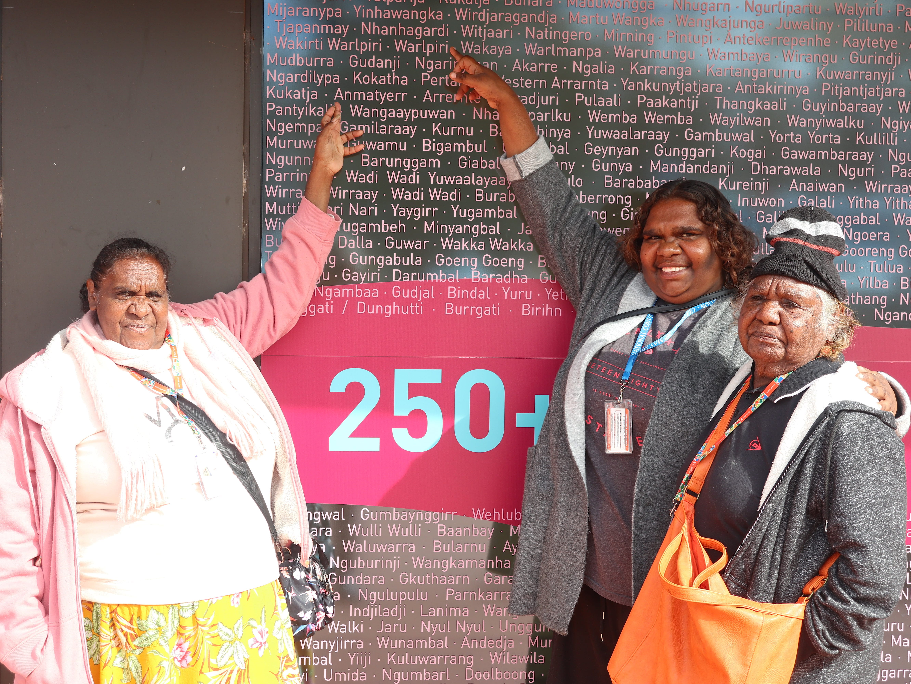
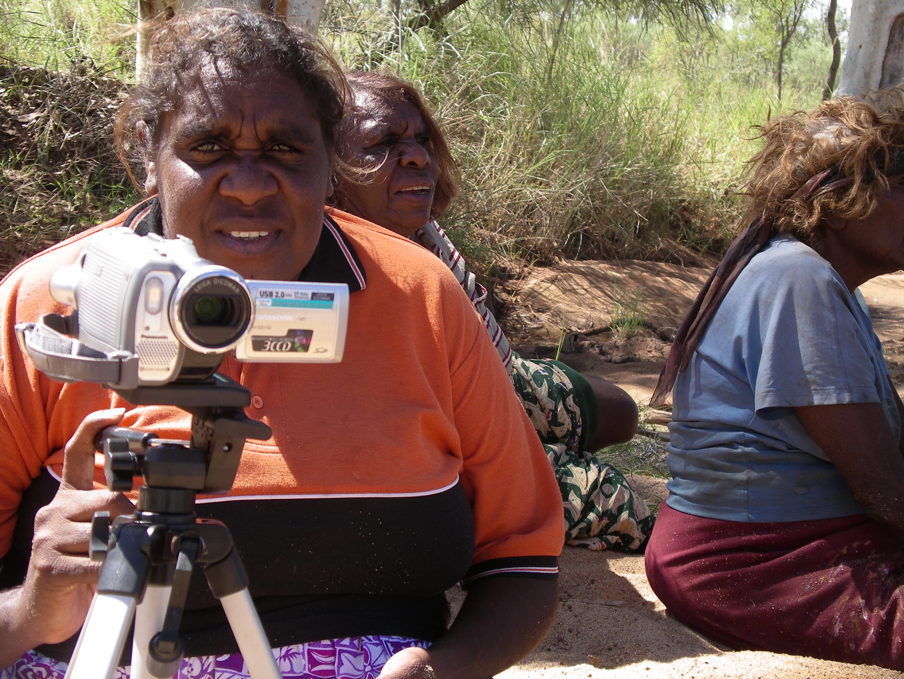

AIATSIS (Australian Institute of Aboriginal and Torres Strait Islander Studies)
‘It was really important for us to go and see that place because we had never been there before. Elders has been asking where our things are, and we told them. They said that was good as long as the next generation has access to them.’

XXXX, April Campbell Pengart, Clarrie Kemarr Long and Emmanisha Kemarr Pepperill visit AIATSIS, Canberra June 2019.
Jennifer Green
Sand Stories (GREEN_J001)
TYEP-20060908 Sand story by April Campbell.
TYEP-20070411 Sand stories by Clarrie Kemarr and Janie Long.
TYEP-20070904-01 Sand stories told by Eileen Perrwerl Campbell.
TYEP-20111026-04 Sand story by Eileen Campbell Perrwerl.
TYEP-20111103-02 Sand story by Clarry Kemarr Long.
TYEP-20130605 April Campbell and Eileen Campbell demonstrate some tyepety designs.
TYEP-20130606-01 Recordings of games.
TYEP-20130606-02 Recording of sand story explanation of Angenty story.
TYEP-20130606-03 Crawling baby story by Eileen Campbell.
TYEP-20130606-04 Monster story by Clarrie Long.
TYEP-20110714 Sand story by April Campbell with Monica Garawirrtja and Elisha Garawirrtja.
String Games (GREEN_J001)
STR-20121222 Recording Anmatyerr string games with April Campbell.
STR-20120622 Anmatyerr string games.
Sign Language (GREEN_J001)
SIGN-20110222 Sign recording for handshape drawings with Clarrie Kemarr Long.
SIGN-20110322 Anmatyerr signs by Clarrie Kemarr Long in Alice Springs: Session 1.
SIGN-20110324 Anmatyerr signs by Clarrie Kemarr Long in Alice Springs: Session 2.
SIGN-20110325 Anmatyerr signs by Clarrie Kemarr Long in Alice Springs: Session 3.
SIGN-20110404-01 Anmatyerr signs by Clarrie Kemarr Long at Hanson River.
SIGN-20110404-02 Anmatyerr signs by Eileen Perrwerl Campbell at Hanson River.
SIGN-20110405-02 Anmatyerr signs by Clarrie Kemarr Long and Eileen Perrwerl Campbell at Ti Tree.
SIGN-20110405-03 Anmatyerr signs by Clarrie Kemarr Long at Ti Tree.
SIGN-20110405-04 Anmatyerr signs by Eileen Perrwerl Campbell at Hanson River.
SIGN-20110628-01 Anmatyerr signs by Eileen Perrwerl Campbell at Hanson River.
SIGN-20110629-01 Anmatyerr signs by Clarrie Kemarr Long at Hanson River.
SIGN-20110629-02 Anmatyerr signs by Eileen Perrwerl Campbell at Hanson River.
SIGN-20110630-01 Anmatyerr signs by Clarrie Kemarr Long at Hanson River.
SIGN-20110630-02 Anmatyerr signs by Eileen Perrwerl Campbell at Hanson River.
SIGN-20110719-01 Anmatyerr signs by April Pengart Campbell at Ti Tree.
SIGN-20110719-02 Anmatyerr signs by Clarrie Kemarr Long at Ti Tree.
SIGN-20110719-03 Anmatyerr signs by Eileen Perrwerl Campbell at Ti Tree.
SIGN-20111027-03 Back translation of sign reciprocals film with Clarrie Kemarr Long at Ti Tree.
SIGN-20111027-04 April Campbell and Janie Long sign Anmatyerr Baby Board Book.
SIGN-20120227-01 Anmatyerr sign elicitation by April Campbell at Ti Tree.
SIGN-20120228-01 Anmatyerr sign language elicitation with Clarrie Kemarr Long at Ti Tree.
SIGN-20130523 Anmatyerr kin term signs with Eileen Perrwerl Campbell at Ti Tree.
SIGN-20130530 Back translating signs with Clarrie Long in Alice Springs.
SIGN-20130605 Recording sign use discussion with April Campbell and Clarrie Long at Hanson River.
SIGN-20130828 Anmatyerr signs demonstrated by Clarrie Long at Utopia.
SIGN-20150505 Signs for birds and animals. Re-recording of signs for useful expressions with Eileen Campbell and Clarrie Kemarr Long.
SIGN-20150506 Signs for birds, animals and useful expressions.
SIGN-20150507 Signs for birds, useful expressions and key signs recorded at Ti Tree with Eileen Campbell and Clarrie Long.
SIGN-20161004 Recording signs at Ti tree with Eileen Campbell and Clarrie Kemarr.

Recording sign language and songs in the Hansen River 2007. April Campbell, Eileen Campbell.
Jennifer Green
Dictionary work
IAD Anmatyerr and Kaytetye Dictionaries tapes
1997-2001 Call Number IAD_05
Central Australian Dictionary Project
1983-2002 Call Number IAD_11
ELAR (Endangered Languages Archive) https://www.elararchive.org/
Songs (Arandic-turpin-0019)
SP-070411Hanson_Creek
Title: Women's singing and dancing of Arrwek at Hanson Creek and associated narrative. Description: Singing of 9 women's awely Arrwek songs lead by Clarrie Kemarr and Molly Perrwerl. Also story of Arrwek Dreaming told by Clarrie Kemarr. Date created: 2007-04-11
SP-080930Arrwek
Title: Anmatyerr women singing awely arrwek for Anmatyerr Water Project, CDU
Description: Awely Arrwek performed for the Anmatyerr Water Project, Charles Darwin University. Date created: 2008-09-309TiTree
SP-081029TiTree
Title: Discussion of the meaning of songs from Awely Arrwek
Description: Discussion of meaning of awely arrwek songs for the Anmatyerr water project DVD, based at Charles Darwin University. Date created: 2008-10-29
SP-081031TiTree
Title: Discussion of the meaning of songs from Awely Arrwek
Description: Discussion of meaning of awely arrwek songs for the Anmatyerr water project DVD, based at Charles Darwin University. Date created: 2008-10-31
SP-090908TiTree
Title: Anmatyerr Awely sung during painting up.
Description: Women's awely singing at TiTree school during MobFest. Countries mainly Arrwek but some others. Date created: 2009-09-08
SP-081015TiTree
Description: Women's awely singing at TiTree school during MobFest. Countries include Angenty, Wanteparr, Arrwek, Arnkang, Paw, Ngam, Lherramp and Walamperrng. Singing was done while painting up various women and children at Ti Tree school. Date created: 2008-10-15
SP-081016TiTree
Title: Anmatyerr Awely sung during painting up
Description: Women's awely singing at TiTree school during MobFest. Countries include Angenty, Wanteparr, Arrwek, Arnkang, Paw, Ngam, Lherramp and Walamperrng. Singing was done while painting up various women and children at TiTree school. Date created: 2008-10-16
Sand stories and sign languages (arandic-green-0270)
AUSTGEO
Title: Film about sand stories and sign languages
AUSTGEO-FRE
Title: Film about sand stories and sign languages. Subtitled in French
TYEP-20060908
Title: Sand story by April Campbell Pengart. Description: Interview with April Campbell Pengart about tyepety 'sand stories'. Date created: 2006-08-08
TYEP-20110714
Title: Sand story by April Campbell with Monica Garawirrtja and Elisha Garawirrtja.
Date created: 2011-07-14
TYEP-20111103-02
Title: Sand story by Clarry Long Kemarr
TYEP-20070904-01
Title: Sand stories by Eileen Campbell Perrwerl
Description: Two versions of katyerr ‘desert raisin’ sand story, told by Eileen Perrwerl Campbell. Subtitled movie and PDf of transcript, appeared in Green (2009) PHD
Date created: 2007-09-04
TYEP-20111026-04
Title: Sand story by Eileen Campbell Perrwerl. Date created: 2011-10-26
TYEP-20111026-04FRE
Title: Sand story by Eileen Campbell Perrwerl (French). Subtitled in French.
Date created: 2011-10-26
SIGN-20110719-01
Title: Sign language recording with April Pengart Campbell
SIGN-20110719-02
Title: Sign language recording with Clarrie Kemarr Long. Date created: 2011-07-19
SIGN-20110630-01
Title: Sign language recording with Clarrie Kemarr Long
Description: Elicitation from list of Anmatyerr spoken kin terms, and includes signs for types of person, and for some common expressions
Date created: 2011-06-30
SIGN-20120228-01
Title: Sign language recording with Clarrie Long Kemarr
Description: Elicitation of sign language grammatical morphemes. with Clarrie Long Kemarr
Date created: 2012-02-28
SIGN-20110405-02
Title: Sign language recording with Clarrie Kemarr Long and Eileen Pwerrerl Campbell.
Date created: 2011-04-05
SIGN-20110325
Title: Sign language recording with Clarrie Kemarr Long
Description: Includes signs for birds; reptiles; insects; bush foods. Date created: 2011-03-25
PARADISEC
Arlkeny map-akert or the Australian Indigenous Languages Image Bank ‘AILIB’ is a collection of over 1300 line-drawn illustrations. The collection has been compiled and deposited at PARADISEC with permission of the illustrators to support the creation of non-commercial learning resources and reference materials.
The collection is duel named, with the Anmatyerr name Arlkeny map-akert ('having many designs/pictures') contributed by April Campbell. April's work teaching Anmatyerr language and driving the development of picture-based language resources is acknowledged here. The compilers are Inge Kral, Samantha Disbray and Jennifer Green. The project was supported by the Centre of Excellence for the Dynamics of Languages, the University of Queensland and the University of Melbourne.
CENTRAL LAND COUNCIL
1993-2005 Photographs in Central Land Council Keeping Culture. https://www.clc.org.au/keeping-culture-our-digital-archive/
NT Library Archive - Territory Stories
ADD LINK